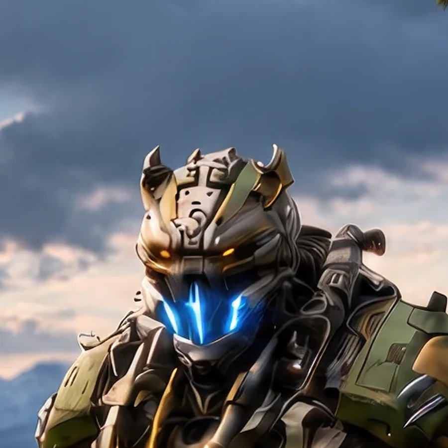
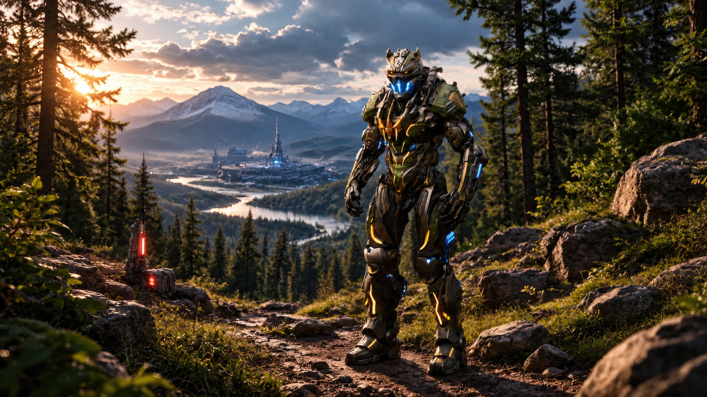
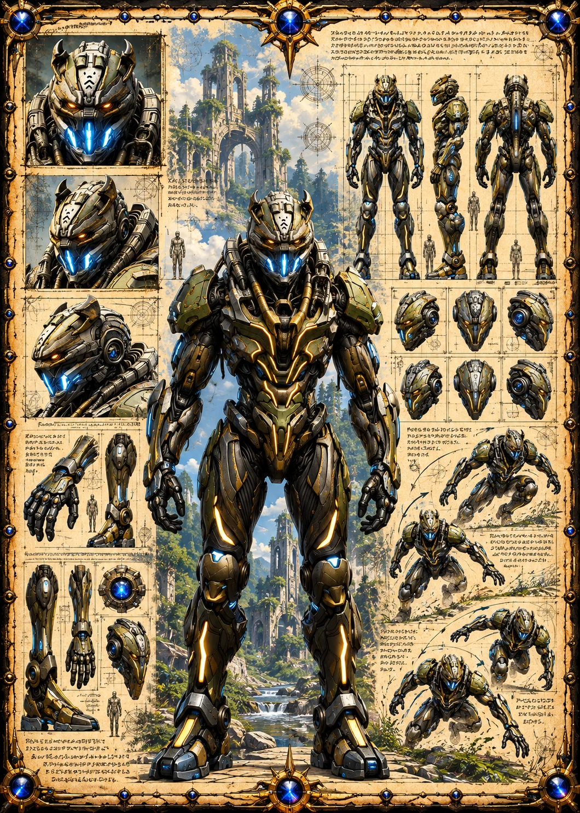

Field Observation
A red beacon glows among the trees at the far left.
 ©
©
GENEZYS ARCHIVE · EARTH 1 · Synthbot
Toxin Fencer
Identity & combat record
Archive node 01 / 05

Archive record
Syktron fences with venom instead of steel. The Septic Edge bites through armor and drains an enemy's energy before the wound is even felt. Every shell of the Horde grows from the same Spore, but Syktron grew the sharpest teeth.
Combat signature
Bites fetid venom under armor: Reduces the target's Cosmara by 140 and deals 50 damage.
Genezys 10:02 ™&©2026LEGIONS
Recovered visual record
Archive node 02 / 05

Full frame available // rotate device to landscape
Technical archive
Archive node 03 / 05

Classified field intelligence
Archive node 04 / 05
FIELD REPORT // BEACON DETECTION
Field Observation
A red beacon glows among the trees at the far left.
Environment
Object Analysis
Key Findings
Motion archive
Archive node 05 / 05
Motion record not yet recovered